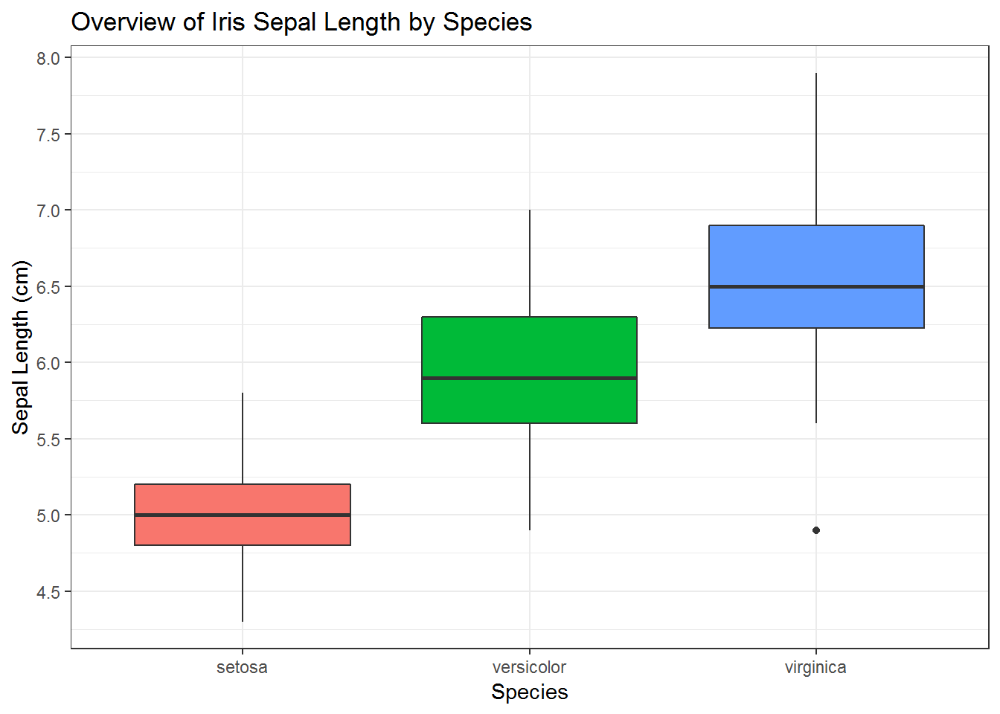

3. Các chỉ số thống kê mô tả cơ bản¶
Trong quá trình phân tích dữ liệu, việc làm phân tích khám phá dữ liệu (exploratory data analysis) rất quan trọng, vì nó giúp chúng ta có cái nhìn tổng quan về tập dữ liệu mà chúng ta đang có. Để làm được điều đó thì chúng ta cần phải biết đọc hiểu những chỉ số thống kê cơ bản như: min, max, median, mean, quantile 25%, quantile 75%.
Ngoài ra, chúng ta cũng cần phải biết những phương pháp kiểm định phổ biến thường hay sử dụng trong thực tế như: Chi-square, correlation, ANOVA… Trong chương này, tác giả muốn giới thiệu với các bạn lần lượt những chỉ số thống kê cơ bản cũng như các phương pháp kiểm định quan trọng nói trên.
Trước hết, chúng ta sẽ cùng nhau tìm hiểu cách đọc hiểu những chỉ số thống kê cơ bản như: min, max, median, mean, quantile 25%, quantile 75%.
Trong chương này, chúng ta sẽ sử dụng dữ liệu iris có sẵn trong R,
dữ liệu bao gồm kích thước chiều dài, chiều rộng cánh hoa và đài hoa của
3 loài hoa khác nhau: setosa, versicolor, virginica (đơn vị đo: cm). Mỗi
loài hoa có 50 bông hoa với kích thước khác nhau.
library(dplyr)
data("iris")
iris %>% summary
## Sepal.Length Sepal.Width Petal.Length Petal.Width
## Min. :4.300 Min. :2.000 Min. :1.000 Min. :0.100
## 1st Qu.:5.100 1st Qu.:2.800 1st Qu.:1.600 1st Qu.:0.300
## Median :5.800 Median :3.000 Median :4.350 Median :1.300
## Mean :5.843 Mean :3.057 Mean :3.758 Mean :1.199
## 3rd Qu.:6.400 3rd Qu.:3.300 3rd Qu.:5.100 3rd Qu.:1.800
## Max. :7.900 Max. :4.400 Max. :6.900 Max. :2.500
## Species
## setosa :50
## versicolor:50
## virginica :50
##
##
##
Câu lệnh summary() cho ta biết các chỉ số thống kê cơ bản của một
hoặc nhiều biến số trong tập dữ liệu như:
- Min: giá trị nhỏ nhất
- Max: giá trị lớn nhất
- First quantile: quantile 25%
- Median: giá trị trung vị
- Third quantile: quantile 75%
- Mean: giá trị trung bình
Để giải thích cách đọc hiểu các chỉ số thống kê nói trên, chúng ta sẽ
cùng xem tổng quan kích thước chiều dài cánh hoa (biến Petal.Length)
của các loài hoa trên.
iris %>%
select(Petal.Length) %>%
summary
## Petal.Length
## Min. :1.000
## 1st Qu.:1.600
## Median :4.350
## Mean :3.758
## 3rd Qu.:5.100
## Max. :6.900
Thông qua kết quả trên, chúng ta có thể biết một số thông tin sau:
- Cánh hoa ngắn nhất có chiều dài 1cm
- 25% trên tổng số 150 bông hoa có chiều dài cánh hoa nhỏ hơn 1.6 cm
- 50% trên tổng số 150 bông hoa có chiều dài cánh hoa nhỏ hơn 4.35 cm
- Chiều dài trung bình của tất cả 150 bông hoa là 3.758 cm
- 75% trên tổng số 150 bông hoa có chiều dài cánh hoa nhỏ hơn 5.1 cm
- Cánh hoa dài nhất có chiều dài 6.9 cm
Như vậy, chúng ta đã có thể đọc hiểu những chỉ số thống kê cơ bản như:
giá trị nhỏ nhất/lớn nhất, giá trị trung bình/trung vị, giá trị quantile
25%, 75% với việc sử dụng một câu lệnh summary() đơn giản trong
R.
3.1. Correlation¶
Hệ số tương quan
Hệ số tương quan (correlation coefficient) là một chỉ số thống kê, được sử dụng để đo lường mối liên hệ tương quan tuyến tính giữa 2 biến định lượng hay còn gọi là biến liên tục (quantitative/continuous variables). Hay nói một cách dễ hiểu hơn, hệ số tương quan cho ta biết rằng giữa 2 biến liên tục có mối liên hệ nào hay không.
Hệ số tương quan có giá trị từ -1 đến 1. Dấu “+” hoặc “-” của hệ số tương quan cho ta biết 2 biến có mối liên hệ tương quan tuyến tính cùng chiều hoặc ngược chiều tương ứng. Nếu hệ số tương quan của 2 biến mang dấu “+” có nghĩa là khi biến này tăng thì biến kia cũng tăng, còn nếu hệ số tương quan của 2 biến mang dấu “-” thì có nghĩa là khi biến này tăng thì biến kia sẽ giảm.
Hệ số tương quan của 2 biến bằng 0 có nghĩa là 2 biến không có mối liên hệ tương quan tuyến tính (no relationships), hệ số tương quan bằng -1 hoặc 1 có nghĩa là 2 biến có mối liên hệ tương quan tuyến tính tuyệt đối.
Tiếp tục sử dụng dữ liệu iris, chúng ta tính toán hệ số tương quan
của từng cặp biến chiều dài, chiều rộng cánh hoa và đài hoa của các loài
hoa để xem 4 biến trên có mối liên hệ với nhau như thế nào. Để tính hệ
số tương quan trong R, chúng ta có thể sử dụng hàm cor().
cor(iris %>% select(1:4))
## Sepal.Length Sepal.Width Petal.Length Petal.Width
## Sepal.Length 1.0000000 -0.1175698 0.8717538 0.8179411
## Sepal.Width -0.1175698 1.0000000 -0.4284401 -0.3661259
## Petal.Length 0.8717538 -0.4284401 1.0000000 0.9628654
## Petal.Width 0.8179411 -0.3661259 0.9628654 1.0000000
Kết quả cho ta thấy Sepal.Length và Petal.Length có mối liên hệ
tương quan tuyến tính cùng chiều (hệ số tương quan 0.87), trong khi đó,
Sepal.Length và Sepal.Width có mối liên hệ tương quan tuyến tính
ngược chiều (hệ số tương quan -0.11).
Kiểm định hệ số tương quan
Như vậy, chúng ta đã hiểu bản chất của hệ số tương quan và biết cách
tính hệ số tương quan trong R. Câu hỏi đặt ra lúc này là làm thế nào
để biết được thực sự hệ số tương quan được tính toán có ý nghĩa về mặt
thống kê hay không, hay nói cách khác, giữa 2 biến có thực sự có mối
liên hệ hay không. Vì vậy, chúng ta cần kiểm định hệ số tương quan.
Giả sử, chúng ta muốn biết xem 2 biến Sepal.Length và
Petal.Length có mối liên hệ hay không. Như đã tính toán ở phần
trước, hệ số tương quan của 2 biến này là 0.87, chúng ta sẽ kiểm định
xem hệ số tương quan này có ý nghĩa về mặt thống kê hay không, tức chúng
ta cần kiểm định xem hệ số tương quan của 2 biến này có khác 0 hay
không. Chúng ta có cặp giả thuyết sau:
- Ho: 2 biến không có mối liên hệ (hệ số tương quan = 0)
- H1: 2 biến có mối liên hệ (hệ số tương quan khác 0)
cor.test(iris$Sepal.Length,iris$Petal.Length)
##
## Pearson's product-moment correlation
##
## data: iris$Sepal.Length and iris$Petal.Length
## t = 21.646, df = 148, p-value < 2.2e-16
## alternative hypothesis: true correlation is not equal to 0
## 95 percent confidence interval:
## 0.8270363 0.9055080
## sample estimates:
## cor
## 0.8717538
Kết quả cho ta thấy p-value < 2.2e-16, như vậy, chúng ta bác bỏ giả thuyết Ho, thừa nhận H1, tức 2 biến trên có mối liên hệ với nhau, cụ thể hơn là tương quan tuyến tính cùng chiều (hệ số tương quan 0.87).
3.2. ANOVA¶
ANOVA viết tắt của từ analysis of variance, tức phân tích phương sai. Phương pháp ANOVA được sử dụng khi chúng ta muốn so sánh giữa 2 hoặc nhiều nhóm đối tượng khác nhau dựa vào 1 tiêu chí nhất định nào đó, ví dụ như so sánh độ tuổi của nhóm khách hàng thường và khách VIP, hay so sánh thu nhập của nhóm khách hàng nam và khách hàng nữ… Để giải thích một cách dễ hiểu hơn, chúng ta sẽ làm ví dụ sau.
Giả sử chúng ta muốn so sánh chiều dài đài hoa của 3 loài hoa trong tập
dữ liệu iris.
Chúng ta sẽ vẽ biểu đồ boxplot so sánh Sepal.Length giữa các loài
hoa (Species).
library(ggplot2)
iris %>%
ggplot(aes(Species, Sepal.Length, fill = Species)) +
geom_boxplot() +
labs(
title = "Overview of Iris Sepal Length by Species",
x = "Species",
y = "Sepal Length (cm)") +
scale_y_continuous(breaks = seq(0,10, by = 0.5)) +
theme_bw() + # Background đen trắng
theme(legend.position = "none") # Bỏ legend

Nhìn vào biểu đồ boxplot trên, ta thấy chiều dài đài hoa của loài hoa
virginica lớn hơn so với 2 loài hoa còn lại ở cả giá trị median,
quantile 25% và quantile 75%. Trong khi đó, setosa có chiều dài đài
hoa ngắn nhất trong 3 loài hoa.
Tuy nhiên, để chắc chắn khẳng định rằng thực sự có sự khác biệt chiều dài đài hoa giữa các loài hoa hay không thì chúng ta cần phải sử dụng kiểm định ANOVA.
Kiểm định ANOVA sẽ giúp chung ta so sánh chiều dài đài hoa trung bình giữa các loài hoa, sau đó tính toán chênh lệch chiều dài đài hoa trung bình giữa các loài hoa, và cuối cùng sẽ kiểm định xem những sự chênh lệch đó thực sự có ý nghĩa về mặt thống kê hay không. Hay nói cách khác, phương pháp ANOVA kiểm định cặp giả thuyết sau:
- Ho: Không có sự khác biệt giữa chiều dài đài hoa của các loài hoa (tức chênh lệch chiều dài đài hoa trung bình = 0)
- H1: Có sự khác biệt giữa chiều dài đài hoa của các loài hoa (chênh lệch chiều dài đài hoa trung bình khác 0)
Trước tiên chúng ta sẽ so sánh chiều dài đài hoa trung bình của các loài hoa.
library(dplyr)
iris %>%
group_by(Species) %>%
summarise(mean = mean(Sepal.Length),
sd = sd(Sepal.Length))
## # A tibble: 3 x 3
## Species mean sd
## <fct> <dbl> <dbl>
## 1 setosa 5.01 0.352
## 2 versicolor 5.94 0.516
## 3 virginica 6.59 0.636
Kết quả cho ta thấy rằng chiều dài đài hoa trung bình của loài hoa
sentosa là 5.01 cm, của versicolor là 5.94 cm, của virginica
là 6.59 cm.
Tiếp theo chúng ta sẽ sử dụng phương pháp ANOVA để kiểm định xem thực sự
có sự khác biệt giữa chiều dài đài hoa trung bình giữa các loài hoa hay
không bằng việc sử dụng hàm aov()
#ANOVA
model <- aov(Sepal.Length ~ Species, data = iris)
model %>% summary
## Df Sum Sq Mean Sq F value Pr(>F)
## Species 2 63.21 31.606 119.3 <2e-16 ***
## Residuals 147 38.96 0.265
## ---
## Signif. codes: 0 '***' 0.001 '**' 0.01 '*' 0.05 '.' 0.1 ' ' 1
Kết quả trên mô hình cho thấy chỉ số p value rất nhỏ, điều này cho
phép chúng ta bác bỏ \(H_0\) và chấp nhận \(H_1\), tức là có sự
khác biệt của giá trị trung bình của Sepal.Length giữa các loài hoa.
Tuy nhiên, trong thực tế, câu hỏi có khác biệt hay không chưa đủ, mà ta còn phải trả lời câu hỏi: “Sự khác biệt là bao nhiêu?”
Để trả lời cho câu hỏi trên, ta có thể sử dụng kiểm định TukeyHSD để
tìm ra sự khác biệt giữa các nhóm.
model %>% TukeyHSD
## Tukey multiple comparisons of means
## 95% family-wise confidence level
##
## Fit: aov(formula = Sepal.Length ~ Species, data = iris)
##
## $Species
## diff lwr upr p adj
## versicolor-setosa 0.930 0.6862273 1.1737727 0
## virginica-setosa 1.582 1.3382273 1.8257727 0
## virginica-versicolor 0.652 0.4082273 0.8957727 0
Giải thích ý nghĩa của bảng kết quả:
- Cột
diff: chênh lệch giá trị trung bình chiều dài đài hoa giữa các loài hoa lwrvàupr: khoảng tin cậy 95% (lwr < diff < upr)p adj: giá trị p-value, nếu p-value < 0.05 thì chúng ta đủ cơ sở để bác bỏ giả thuyết Ho, chấp nhận H1.
Kết quả trong trường hợp này cho ta thấy thực sự có sự khác biệt giữa chiều dài đài hoa của các loài hoa (các giá trị p-value = 0).
Như vậy, trong chương này, chúng ta đã cùng nhau tìm hiểu cách đọc hiểu những chỉ số thống kê cơ bản như: min/max (giá trị nhỏ nhất/lớn nhất), median (giá trị trung vị), mean (giá trị trung bình), quantile 25% và quantile 75%.
Ngoài ra, chúng ta cũng đã biết những kiểm định quan trọng và phổ biến như:
- Chi-square test: sử dụng để xem giữa các biến rời rạc (discrete/categorical variables) có mối quan hệ độc lập hay phụ thuộc lẫn nhau
- Correlation test: sử dụng để xem giữa các biến liên tục (continuous/numeric variables) có mối liên hệ hay không (tương quan tuyến tính)
- ANOVA test: sử dụng để so sánh giữa các nhóm đối tượng khác nhau dựa vào giá trị trung bình của 1 biến nhất định nào đó
3.3. Kiểm định quan hệ Chi-bình phương¶
Một trong những câu hỏi ta thường xuyên phải giải quyết trong quá trình phân tích dữ liệu là tìm kiếm mối quan hệ giữa các biến rời rạc. Một trong những kỹ thuật phổ biến để tìm kiếm mối quan hệ này là sử dụng kiểm định Chi-square (Khi bình phương).
Để thực hiện phân tích mối quan hệ này, ta cần thực hiện ba bước:
- Bước một, xây dựng bảng phân phối tần xuất hai chiều.
- Bước hai, tính toán chỉ số \(\chi^2\) để kiểm định giả thuyết độc lập giữa hai biến
- Bước ba, đưa ra kết luận về mối quan hệ vừa được kiểm định
Để hiểu hơn về kiểm định \(\chi^2\), ta xem xét ví dụ dưới đây.
Ví dụ: Một trang web quảng cáo muốn phân tích về mối quan hệ giữa phương thức quảng cáo và thiết bị sử dụng. Dữ liệu trong một tháng về số lượt người dùng truy cập website được thể hiện như bảng dưới đây (đơn vị nghìn user)
order_dc <- c("Total", "Phone", "Tablet", "Desktop")
order_ch <- c("Organic Search", "Paid Search", "Email", "Display", "Total")
df <- data.frame(device_category = c("Desktop", "Tablet", "Phone", "Total"),
organic_search = c(25,20,35,80),
paid_search = c(20,30,15,65),
email = c(35,25,10,80),
display = c(20,25,40,85),
total = c(100,100,100,300))
df
## device_category organic_search paid_search email display total
## 1 Desktop 25 20 35 20 100
## 2 Tablet 20 30 25 25 100
## 3 Phone 35 15 10 40 100
## 4 Total 80 65 80 85 300
Để phân tích mối quan hệ giữa hai biến, ta có giả thuyết như sau:
- \(H_0\): Phương thức quảng cáo và thiết bị sử dụng không có mối liên hệ với nhau (hai biến độc lập)
- \(H_1\): Phương thức quảng cáo và thiết bị sử dụng có mối liên hệ với nhau (tồn tại mối quan hệ giữa hai biến)
Chỉ số \(\chi^2\) được tính như sau:
Trong đó:
- \(O\) là giá trị quan sát được thực tế (ví dụ: Desktop/Organic Search có 25 ngàn user)
- \(E\) là giá trị kỳ vọng của mỗi cặp giá trị.
Ta tính giá trị kỳ vọng như sau:
- Tính tổng từng cột và từng dòng (giá trị " Total ")
- Nhân từng dòng với từng hàng và chia cho tổng số quan sát
Ví dụ: Giá trị kỳ vọng của Desktop và Organic Search có thể được tính như sau:
Giá trị kỳ vọng của tất cả các giá trị có kết quả như sau
## device_category organic_search paid_search email display
## 1 Desktop 26.67 21.67 23.33 28.33
## 2 Tablet 26.67 21.67 23.33 28.33
## 3 Phone 26.67 21.67 23.33 28.33
Tiếp đó, ta tính toán sự khác biệt giữa giá trị kỳ vọng và giá trị thực tế. Sau đó tính \(\chi^2\) như sau:
- Tính độ sai lệch
- Tính giá trị bình phương
- Chia giá trị vừa tính được cho giá trị kỳ vọng:
Tương tự, ta tính được cho tất cả các biến như sau:
df3 <- data.frame(device_category = c("Desktop", "Tablet", "Phone"),
organic_search = c(0.1, 1.67, 2.6),
paid_search = c(0.13, 3.2, 2.05),
email = c(5.83, 0.12, 7.62),
display = c(2.45, 0.39, 4.8))
df3
## device_category organic_search paid_search email display
## 1 Desktop 0.10 0.13 5.83 2.45
## 2 Tablet 1.67 3.20 0.12 0.39
## 3 Phone 2.60 2.05 7.62 4.80
\(\chi^2\) thực tế được tính bằng tổng các giá trị trên \(\chi^2 = 30.96\)
Với dữ liệu trên, ta có 4 cột và 3 hàng. Như vậy, bậc tự do trong phân phôi \(\chi^2\) là \((4-1)*(3-1) = 6\). Ta có thể so sánh giá trị vừa tìm được với giá trị \(\chi^2\) tại đây. Với \(\alpha\) bằng .1 và 6 bậc tự do, giá trị của \(\chi\)2 là 10.64. Với giá trị thực tế lớn hơn giá trị lý thuyết, ta bác bỏ \(H_0\). Như vậy, về mặt thống kê, tồn tại mối quan hệ giữa phương thức marketing và thiết bị sử dụng.
Ví dụ với R
Trong thực tế, khi phân tích dữ liệu, ta có thể ra quyết định nhanh
chóng về mối quan hệ giữa hai biến rời rạc thông qua p-value.
df %>% select(-1) %>% as.matrix() %>% chisq.test()
##
## Pearson's Chi-squared test
##
## data: .
## X-squared = 30.908, df = 12, p-value = 0.002035
Với \(p-value = 0.002035\), ta bác bỏ \(H_0\), chấp nhận \(H_1\). Nghĩa là tồn tại mối quan hệ giữa phương thức quảng cáo và thiết bị sử dụng.